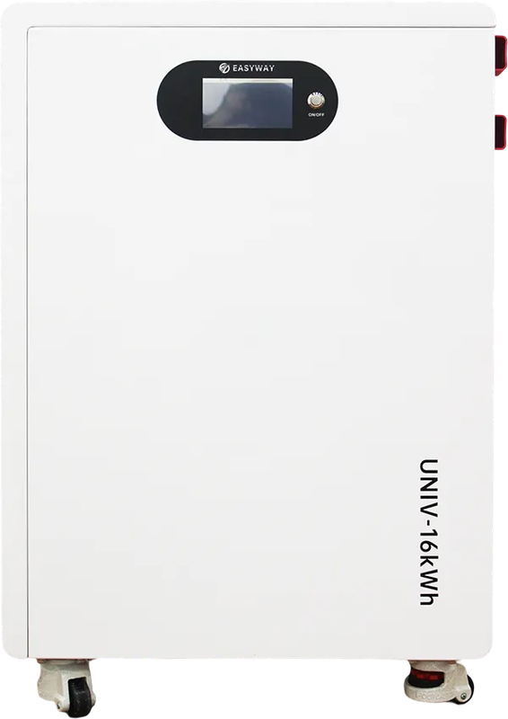
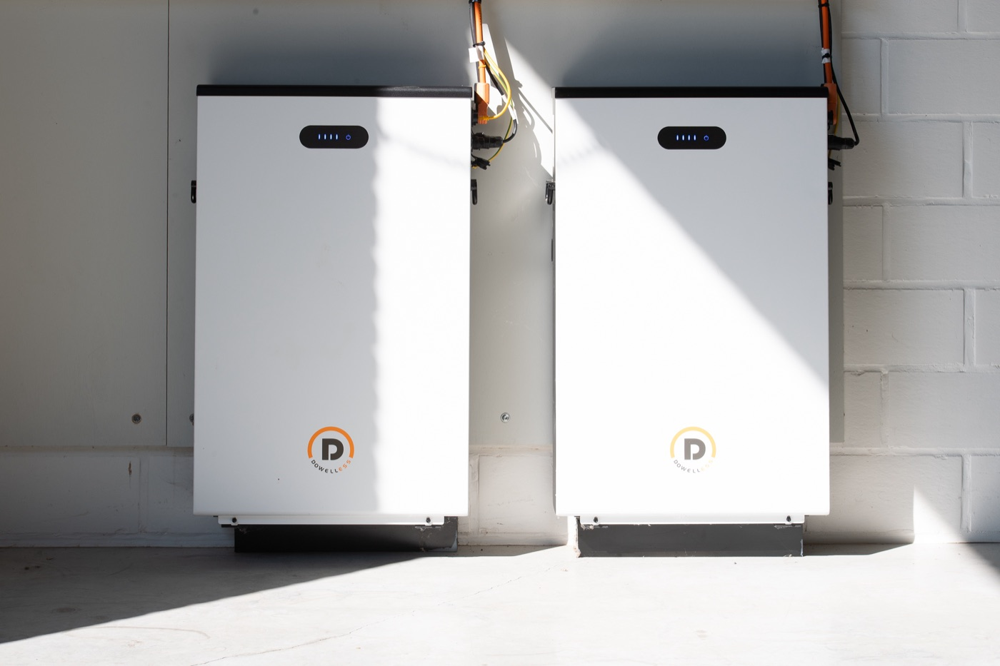
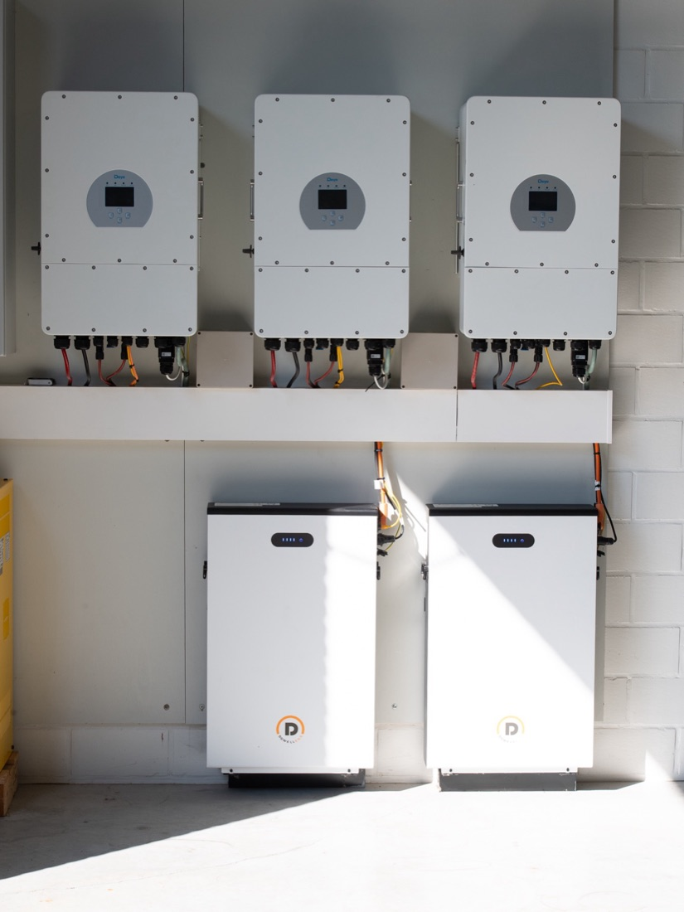

Short answer
Yes, if you are rarely home during the day. Your solar electricity is then worth little at midday and expensive to buy back in the evening. A home battery keeps that electricity until you need it and absorbs the peaks that weigh on your grid bill.
If you already use your generation during the day, it pays back far less. What you use between sunset and the next morning decides the answer — we work that out during the site inspection, before any price is put on the table.

For smart batteries we work with EASYWAY Energy. They have been building storage systems for more than 20 years and hold their own stock in Europe. We chose them for what is verifiable — the certifications, the security of supply and the compatibility — not for the price.
Specialists in LiFePO4: the safest chemistry for home storage, with the longest cycle life.
CE (LVD, EMC, RoHS), IEC 62619, UL 1973 at cell level and UN38.3 — tested for safe use and safe transport.
Own stock in Poland, Germany and France, delivered in 3 to 7 days. No months-long wait for a battery or a spare part.
Officially listed compatible with Sungrow, Solis, Solinteg and SolaX, and with Deye, Growatt, Victron, SMA and GoodWe over CAN or RS485.
No renders, no catalogue shots: these are installations we fitted ourselves.


Your electricity meter used to be a piggy bank. Whatever you over-generated at midday turned the meter back, and in the evening you simply took it out again. Your roof and your evening were connected to each other.
That connection has gone. The digital meter keeps consumption and export separately. What you export, you sell at a low rate; what you draw in the evening, you buy at the full rate with all the grid charges and taxes on top. The same kilowatt-hour, two very different prices.
A home battery restores exactly that. It holds on to your own electricity until you need it, instead of selling it cheaply and buying it back dear.
Think of an ordinary Thursday evening. At six o'clock the hob is on, the washing machine is running, and if there is an electric car on the drive it starts charging too. At that moment your panels are standing idle: the sun has gone.
Everything you use at that point comes from the grid, at the most expensive rate of the day. While you had that electricity yourself eight hours earlier — and gave it away then for a fraction of the price.
That gap, from sunset to the next morning, is where a battery does its work. Not all year, not in every home, but on every evening you are in.
We would rather say this straight away: if you are home during the day and already use your solar electricity as it is being generated, there is little left to store. A battery that only half empties costs money without giving anything back.
The same goes for a home with low usage and no large evening appliances. The most honest advice is then: not a battery yet, or a smaller one than you had in mind.
We would rather sell an installation that is right than a package that sounds big. If the answer in your case is “not yet”, Koen says so during the site inspection.
| Your situation | What that means |
|---|---|
| Few or no people home during the day | Most of your generation currently goes to the grid. This is where a battery gives the best return. |
| Electric car or heat pump | Heavy evening and night usage, and peaks that weigh heavily. Battery and controls work together here. |
| Home during the day, usage follows the sun | You already use your electricity directly. A battery then adds little. |
| Low usage, no large appliances | Little to store. We would sooner advise waiting than investing. |
We do not start from a package but from one figure: what you use between sunset and the next morning. For most households that falls between four and ten kilowatt-hours. That figure is immediately the order of magnitude of a battery that is fully used every day.
Bigger is therefore not better. A battery that empties and refills completely every day is working for you. A battery that always stands half full is expensive idleness.
Want to see it for yourself before we come out? Your own quarter-hour values are on mijn.fluvius.be. More on this in what size battery suits your usage.
A home battery makes sense when you are rarely home during the day and your solar electricity therefore largely goes to the grid. The battery keeps that electricity for the evening, when you cook, wash and charge.
If you already use most of your generation during the day, a battery returns far less. We work that out for your situation instead of selling a battery as standard.
Start from what you use between sunset and the next morning. For most households that falls between four and ten kilowatt-hours, and that is immediately the order of magnitude of a battery that is fully used every day.
Bigger is not better. A battery that only half empties costs money without giving anything back.
EASYWAY builds battery systems and holds its own stock in Europe. That last point sounds dull, but it is exactly what counts on the day a module ever has to be replaced.
LiFePO4 technology, with a battery management system that watches the cells. Warranty: [TO BE CONFIRMED] years.
It flattens your quarter-hour peaks. Part of your grid charge is calculated not on how much electricity you use but on your highest quarter-hour peak — in 2026 with a minimum of 2.5 kW. If the hob, the tumble dryer and the charge point all come on together, the battery supplies the difference instead of the grid. See the capacity tariff explained.
It works together with a smart charge point and with our energy-management software, so that usage shifts automatically to the moment there is electricity available.
The systems we fit are built around the safest chemistry for home storage and carry the European approvals: CE, IEC 62619, UL 1973 at cell level and UN38.3 for transport. A battery management system monitors the cells continuously.
Where it is best placed in your home — garage, utility room or plant room — we look at on site, together with the position of the inverter and the cable route. Installation requirements, inspection and insurance for your project: [TO BE CONFIRMED]
Little, and that is the intention. There is a cabinet on the wall that makes no noise and needs no maintenance. You cook, wash and charge as always.
The difference is on your bill: in the evening you live off your own midday, and less comes from the grid. If output ever drops, we see it in the monitoring.
Yes, and that is often the wisest route. If you fit panels with a hybrid inverter today, the battery can be added later without the inverter having to be replaced.
Anyone who skips that choice at the start buys, when the battery comes, a second unit that would not have been needed. More on this on the inverters page.
That depends on the size, on your existing installation and on the work on site. This is why we do not give a price over the phone: Koen comes to look first, and you then get a clear quote with no obligation.
What still exists in grants and VAT in 2026 we set out openly on grants and VAT. The VAT rate actually charged always appears on your quote.
No. The Flemish grant for home batteries has been discontinued: installations after 31 March 2023 no longer qualify and the application desk has been closed since 1 December 2024.
If you are handed a quote today that still counts on that grant, you are entitled to ask questions about it. What does still exist — municipal contributions among them — we check for your address.
Life is expressed in charge cycles, not in years, and the chemistry we fit was chosen precisely to score high on that.
The exact warranty period and the guaranteed remaining capacity at the end of it: [TO BE CONFIRMED]. We publish no figure on this for as long as it is not confirmed in writing.
That depends on the inverter chosen and on how your board is built up: a battery on its own is not yet a backup supply.
What we can provide in your configuration: [TO BE CONFIRMED]
A home battery hangs or stands against a wall, roughly like a large boiler. The exact dimensions and weight of the model that suits you: [TO BE CONFIRMED]
Tell us a little about your home. We come out, look at it in person, and send a clear quote with no obligation.